建立可攜系統 << Previous Next >> SSH Public Key
建立可攜系統 << Previous Next >> SSH Public Key
ungit-建立
1.進入網址 : http://mde.tw/wcm2019/content/實習項目二.html ，下載 nodejs_with_ungit.7z 。

2.將解壓縮完的整個 nodejs 資料夾放入可攜 data 資料夾中。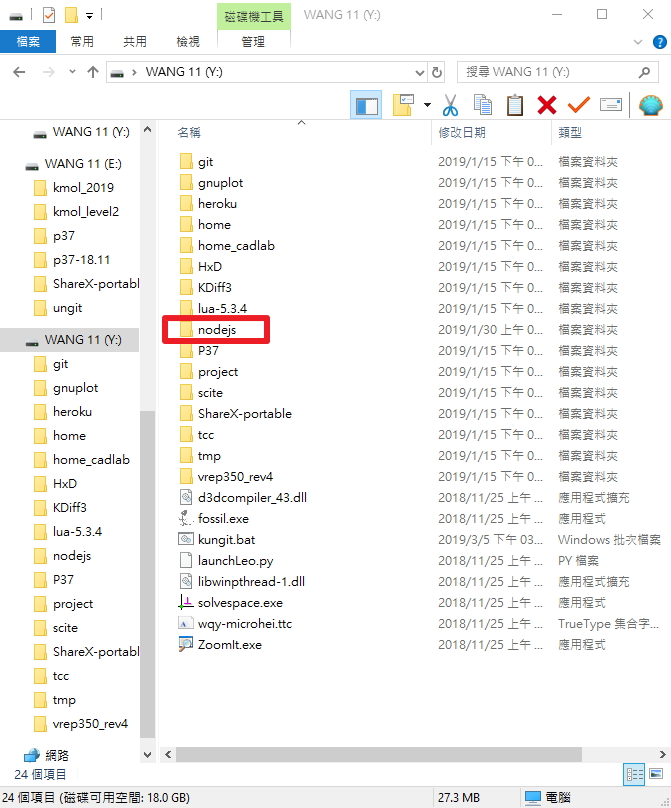
3.以 SciTE 編輯器編輯 start_cadlab.bat。
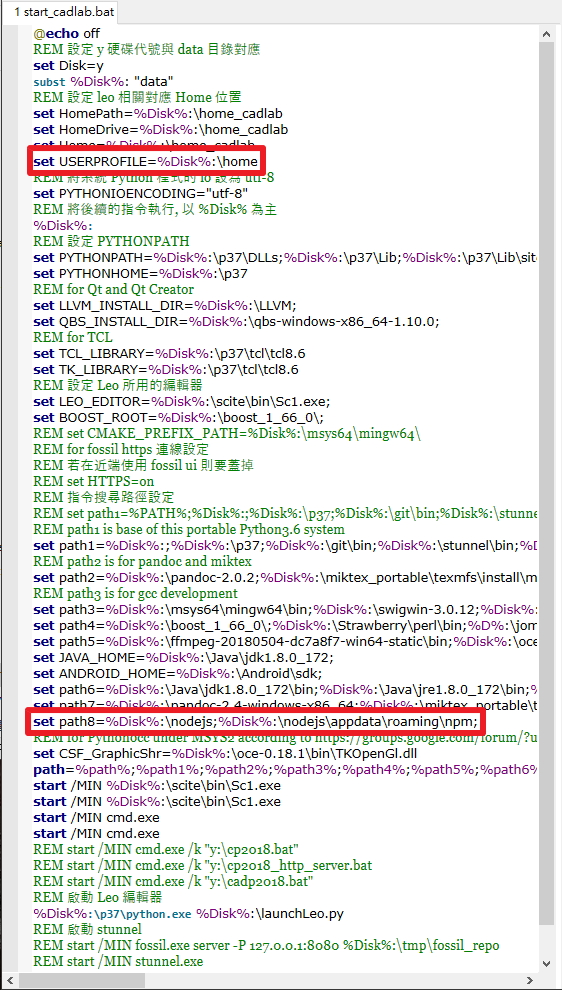
*並且要在path那行增加一個路徑，如下圖
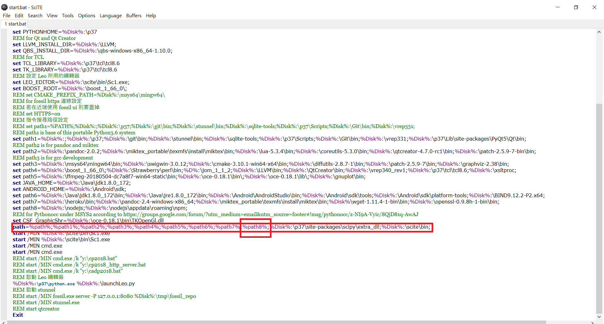
4.在 SciTE 編輯器上輸入指令，指令如下 :
ungit --launchBrowser=0 --launchCommand "C:\PROGRA~2\Google\Chrome\Application\chrome.exe %%U"
如下圖
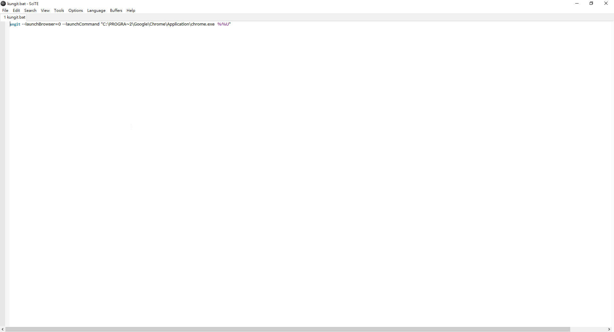5.將上述指令存入 Y:\kungit.bat 批次檔案中。

6. 進入倉儲的資料夾後，只要輸入 kungit 即可呼叫此一 ungit 指令執行。如下圖
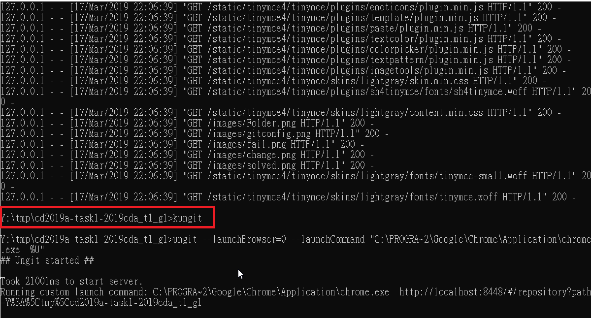
更改帳號
進入 home_cadlab 找到 .gitconfig 這個檔案
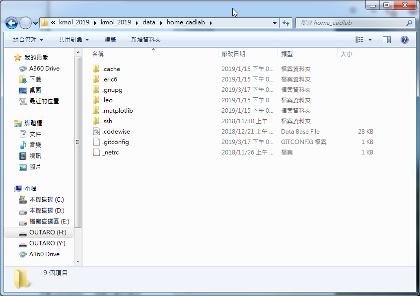
以 SciTE 編輯器編輯 .gitconfig
更改裡面的 name 與 email 並儲存
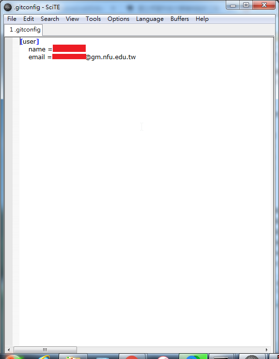
ungit上推問題與解決
ungit無法確認身分，導致無法推送

以 SciTE 編輯器編輯 start_cadlab.bat
把最後的 home 更改成 home_cadlab ，因為帳號在 home_cadlab 這個資料夾裡面
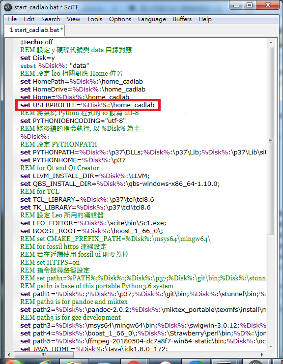
更改並儲存之後點擊 stop.bat 關閉，並重新打開，就可以正常上推資料了
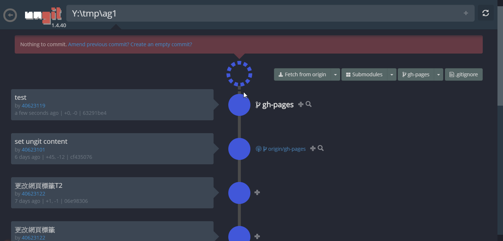
ungit上傳資料
點擊上方create an empty commit 即可創立新的commit
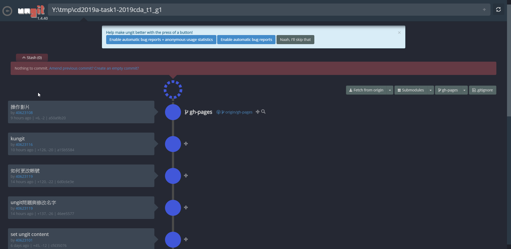
輸入標題及內容即可上傳

commit完成後點擊白色的gh-pages再點擊push就上推完成

若要刪除commit，點擊藍色圓圈，點擊uncommit即可
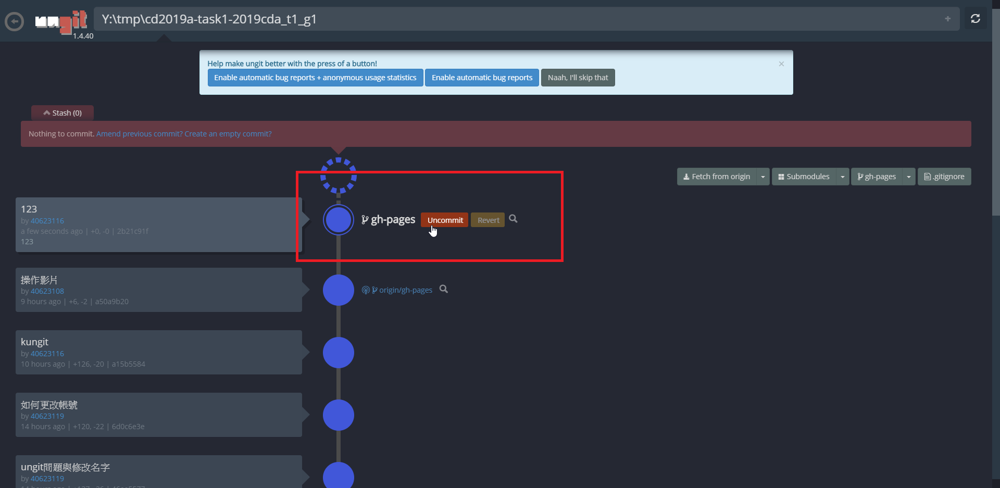
建立可攜系統 << Previous Next >> SSH Public Key